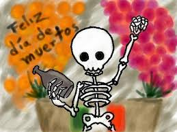
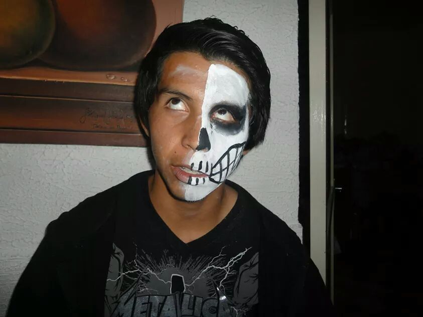

Festividad del Dia de Muertos en Mexico
Que se celebra??
El Día de Muertos es una celebración mexicana de origen mesoamericano1 que honra a los difuntos el 2 de noviembre, comienza desde el 1 de noviembre, y coincide con las celebraciones católicas de Día de los Fieles Difuntos y Todos los Santos.
Es una festividad que se celebra en México y en algunos países de América Central, así como en muchas comunidades de los Estados Unidos, donde existe una gran población mexicana y centroamericana. La Unescoha declarado la festividad como Patrimonio Cultural Inmaterial de la Humanidad.Existe en Brasil una celebración similar conocida como Dia dos Finados, aunque esta festividad no tiene las mismas raíces prehispánicas que el Día de los Muertos.

Diego Armando Moreno Lopez
Fechas Principales
Las almas "se dice" llegan en orden. Quienes murieron el mes anterior al día de Todos los Santos (1º de noviembre) no reciben ofrenda pues carecen de tiempo para obtener permiso de volver, habrá que esperar un año para acudir a la celebración.
- 28 DE OCTUBRE: El día 28 de octubre esta destinado a los muertos por causa de un accidente, por violencia o asesinados, cuando se conoce el lugar del percance se llevan flores de muertos (cempoalxóchitl) y veladoras que se depositan en aquel sitio.
- 30 DE OCTUBRE: El día 30 de octubre se recuerda y espera la llegada de los niños que murieron sin ser bautizados quienes son llamados “limbos” o “limbitos”.
- 1 DE NOVIEMBRE: En algunos lugares el día 31 de octubre, pero generalmente el 1º de noviembre, se esperan las almas de los “chiquitos” o “angelitos”, es decir, a aquellos que murieron siendo niños; se les ofrenda con flores blancas, juguetes, platos llenos de dulces, panecitos y veladoras. Para el día dos se espera la llegada de las almas de los fallecidos en edad adulta.
Dia de Muertos
Ofrenda
Las ofrendas se colocan en los altares domésticos, que se ubican en un lugar determinado dentro de la casa o sobre mesas de uso cotidiano, se preparan con antelación y solemnidad. Se cubre con finos manteles o papel picado (cortes que se hacen al papel produciendo diferentes figuras); según sea la costumbre regional se adorna con hojas de plátano, palmillas, petates de tule, pencas de plátanos o naranjas, se coloca un arco sobre el altar adornado de flores y las hojas antes mencionadas; también se agregan flores de cempoalxóchitl, crisantemos, veladoras, incensarios, la fotografía del muerto, y todo lo que a él le agradaba cuando estaba vivo; así el altar puede contener alimentos como: arroz, mole con pollo, pozole, diferentes guisados, tamales, frijoles, atole, café, tortillas, agua natural, refrescos, tequila, agua miel, mezcal, pulque, cervezas, cigarros, maíz o elotes, fruta, donas, pan, calaveras de azúcar, amaranto y chocolate con el nombre del difunto. Es costumbre en algunos lugares, que los incensarios, los candelabros y las vajillas donde se sirve la comida de los difuntos, sean nuevos; por lo que cada año se prevé el gasto de la compra; después de ser “usados” por el muerto, sirven para uso cotidiano. Si el altar es para un niño, además de lo anterior, se colocan juguetes, ceras con la figura de un angelito, la fotografía del difunto, dulces y hasta la ropa del pequeño. También se colocan en los altares imágenes de santos, de la virgen de Guadalupe o a la que se le rinda culto (la “patrona” del pueblo), cruces de madera o bien, una cruz de ceniza dibujada sobre el piso. Las flores de cempoalxóchitl se colocan sobre floreros o en ramos sueltos y se adorna el altar o se ponen en hilera. En muchas regiones se cortan los pétalos y se esparcen sobre el piso formando un camino desde la entrada de la casa hacia el altar, con el fin de que el alma de difunto se guíe para llegar a su ofrenda.
Los materiales comúnmente utilizados para hacer una ofrenda para el Día de Muertos tiene un significado, y son entre otros los siguientes:
- RETRATO: El retrato del difunto sugiere el ánima que los visitará la noche del 2 de noviembre. . Dicha imagen honra la parte más alta del altar. Se coloca de espaldas y frente a ella se coloca un espejo para que el difunto solo pueda ver el reflejo de sus deudos y estos vean a su vez únicamente al difunto.
- PINTURA O CROMO DE LAS ANIMAS DEL PURGATORIO: La imagen de las ánimas del purgatorio sirve para pedir la salida del purgatorio del alma del difunto por si acaso se encontrara ahí.
- DOCE CIRIOS: Aunque pueden ser menos, tienen que ser en pares, y preferiblemente de color morado, con coronas y flores de cera. Los cirios, sobre todo si son morados, son señal de duelo. Los cuatro cirios en cruz representan los cuatro puntos cardinales, de manera que el ánima pueda orientarse hasta encontrar su camino y su casa aparte de agua y sal.
- FLOR DE CEMPAZUCHITL: o flor de cuatrocientos pétalos Su color representa la luz como los rayos del sol y al regarla en forma de camino y por su aroma, sirve de guía a las almas para indicarles el rumbo por el cual llegar al que fuera su hogar.
- CRUZ: Utilizada en la mayoría de los altares, es un símbolo introducido por los evangelidazadores españoles, con el fin de incorporar el catecismo a una tradición tan arraigada entre los indígenas, como la veneración de los muertos. Para recordarle su fe, ya que el Miércoles de Ceniza se le dice la frase: "Recuerda que polvo eres y en polvo te convertirás", con lo que se le recuerda que regresa a la tierra de la que salió.La cruz va en la parte superior del altar a un costado de la imagen del difunto y esta puede ser de sal, ceniza, tierra o cal.
- CALABAZA EN TACHA: Este fruto ocupa un lugar privilegiado tanto en la cocina tradicional prehispánica como en la actual. Es parte de la tetralogía alimenticia del país, al lado del maíz, el frijol y el chile. De ella se aprovecha todo: tallos, guías, flores, frutos y semillas. En el altar se prepara como dulce: cocida con azúcar, canela, tejocotes, trozos de caña de azúcar o con otros ingredientes, según el gusto de quien cocine. El dulce cristalizado se llama calabazate. La preparación de la calabaza en tacha consiste en introducir dicho fruto en un cesto de palma que se confita en las calderas donde se fabrica el azúcar. Esta es la forma tradicional, pues en las antiguas máquinas de los ingenios se hacía la concentración del guarano o jugo de caña en dos calderas cónicas, colocadas sobre un solo horno (la mancuerna); una de las calderas era la malera, y la otra la tacha. En la actualidad se prepara cocida en miel de piloncillo o panela, antiguamente llamada también tacha para bendecir las casas.
- PAPEL PICADO: También se suelen adornar las ofrendas con papel picado que es una artesanía mexicana que se elabora con papel de china recortado con figuras de esqueletos y calaveritas, este es considerado como una representación de la alegría festiva del Día de Muertos y del viento.
- VARA DE TEJOCOTE: con esa se abrirá paso el alma que regresa a visitar a sus parientes, por eso no se le deben de quitar las espinas.
- ARCA DE CAÑA Y FLORES: en algunos lugares de México se acostumbra a realizar este arco, el cual simboliza el paso a una vida de purificación y el abandono del cuerpo terrenal
- COPAL E INCIENSO: El copal es un elemento prehispánico que limpia y purifica las energías de un lugar, santificando el ambiente.
- AGUA: El agua tiene gran importancia ya que, entre otros significados, refleja la pureza del alma, el cielo continuo de regeneración de la vida y de las siembras y en la ofrenda se representa con un vaso lleno de agua que sirve para que el espíritu mitigue su sed después del viaje desde el mundo de los muertos.
- COMIDA: Se coloca el alimento tradicional o el que era del agrado de los fallecidos se coloca para que el alma lo disfrute.
- BEBIDAS ALCOHOLICAS: Son bebidas que fueron del gusto del difunto denominados “trago”, generalmente son “caballitos” de tequila, pulque, cerveza y mezcal.
Dia de Muertos
Catrina
La Catrina, originalmente llamada La Calavera Garbancera, es una figura creada por José Guadalupe Posada y bautizada por el muralista Diego Rivera.
Origen:
La versión original es un grabado en metal con autoría del caricaturista José Guadalupe Posada. El nombre original es Calavera Garbancera. «Garbancera» es la palabra con la que se conocía entonces a las personas que vendían garbanza que teniendo sangre indígena pretendían ser europeos, ya fueran españoles o franceses (este último más común durante el Porfiriato) y renegaban de su propia raza, herencia y cultura.
Esto se hace notable por el hecho de que la calavera no tiene ropa sino únicamente el sombrero; desde el punto de vista de Posada, es una crítica a muchos mexicanos del pueblo que son pobres, pero que aun así quieren aparentar un estilo de vida europeo que no les corresponde.
Fue Diego Rivera quien la dibujó por primera vez vestida en su mural Sueño de una tarde dominical en la Alameda Central, donde la calavera aparece como acompañante de su creador, José Guadalupe Posada. También fue el muralista quien la llamó «Catrina», nombre con el que se popularizó posteriormente, convirtiéndola así en un personaje popular mexicano.
La imagen de la Catrina se está convirtiendo en la imagen mexicana por excelencia sobre la muerte, es cada vez más común verla plasmada como parte de celebraciones de día de muertos a lo largo de todo el país, incluso ha traspasado la imagen bidimensional y se ha convertido en motivo para la creación de artesanías, ya sea de barro u otros materiales, las cuales dependiendo de la región pueden variar un poco en su vestimenta e incluso su famoso sombrero, pero que igual se les ha dado en llamar "catrinas".
Dia de Muertos
Janitzio
En Janitzio, Michoacán, se acostumbra erigir un altar sobre la tumba y las mujeres se sientan resignadas y llorosas a contemplar las llamas de los cirios y hacer oraciones por los muertos. A intervalos se arrodillan ante la cruz que indefectiblemente preside el rito, y quedan pensativos como evocando a los difuntos añorando su presencia.
Tiene además, un nombre y celebridad debidamente conquistado por la celebración de "Noche de Muertos", el día 1 al 2 de noviembre, aunque las celebraciones son las mismas en toda la región lacustre, se le han otorgado a esta Isla por antonomasia. Y refieren una historia tradicional indicando que durante esa noche, surge la sombra de Mintzita corazón, hija del Rey Tzintzicha, y la de Itzihuapa, hijo de Taré y Príncipe heredero de Janitzio: Locamente enamorados, no pudieron desposarse por la inesperada llegada de los conquistadores. Preso ya el Rey padre de Mintzita, por Nuño de Guzmán quiso la princesa rescatarlo ofreciéndole el tesoro fabuloso que se encontraba bajo las aguas, entre Janitzio y Pacanda. Y cuando el esforzado Itzihuapa se apresaba a extraerlo, se vio atrapado por veinte sombras de los remeros que lo escondieron bajo las aguas y que fueron sumergidos con él. Itzahuapa quedó convertido en el vigésimo primer guardián de tan fantástica riqueza. Pero en la noche del día de muertos despiertan todos los guardianes del tesoro, al lúgubre tañer de los bronces de Janitzio, y suben la empinada cuesta de la isla. Los dos Príncipes, Mintzita e Itzihuapa se dirigen al panteón para recibir la ofrenda de los vivos a las luces plateadas de la Luna, los dos espectros se musitan palabras cariñosas y, a las llamas inciertas de los cirios, se ocultan de las miradas indiscretas. En Janitzio las flores son inspiración y gozo que se cantan en las pirekuas como Tzitziki Canela (Flor de Canela). Tzitziki Changunga (flor de Changunga), son cantos en los que se compara a la mujer con las flores por su delicadeza, finura y exquisitez. Nadie interrumpe sus coloquios amorosos, mientras tanto las estrellas fulguran interesantemente en las aventuras, las campanas tocan desesperadamente y el lago gime como una alma en pena.
Hacia las 12 de la noche del 1o. de noviembre la mujeres y los niños se desplazan con solemnidad, localizan los lugares de reposo de sus seres queridos, ponen hermosas servilletas bordadas sobre las tumbas y depositan ahí los manjares que en vida fueron del agrado de sus distintos difuntos, colocan ofrendas florales enmarcadas por las luces de numerosas velas, y así transcurre la noche entre alabanzas, rezos y cantos de las mujeres y niños, mientras los hombres de lejos, en las afueras del cementerio, observan atentos todo lo que sucede en el interior del panteón. Una campana colocada en el arco de la entrada del panteón, suena discretamente toda la noche, llamando a las ánimas a que se presenten a la gran ceremonia.
En toda la Isla hacen eco los cantos purépechas de dulce y musical cadencia que imploran el descanso de las almas de los ausentes y la felicidad de los que quedan en la tierra. Participar en esta fiesta es cumplir con un deber sagrado para los muertos, que hacen honor a quienes lo practican. En Michoacán, la conmemoración del Día de Muertos es una tradición solemne que aún conserva esa genuina manifestación de un profundo respeto y veneración a los seres que materialmente ya no existen, y a los que a través de la ofrenda se les rinde tributo
Dia de Muertos
Huaquechula
Huaquechula es una población ubicada al suroeste de la ciudad de Puebla, es decir en la carretera federal que va desde Atlixco a Izúcar de Matamoros. Su nombre en náhuatl significa: “lugar del águila de plumaje precioso” y su glifo emblema lo podemos conocer por el códice mendocino. Con la llegada de los españoles el pueblo de Huaquechula adoptó la tradición religiosa católica y la incorporó con muchas de sus tradiciones prehispánicas, este pueblo realizo una enorme práctica sincretista.
En tiempos prehispánicos se tenía un complejo sistema de creencias sobre el destino de los muertos y su relación con los vivos; e incluso y gracias a la labor de etnohistoriadores podemos conocer que tenía días especiales para celebrar a los muertos dependiendo de su edad al morir o de su forma de morir. Otro dato interesante es conocer que ya se hacían ofrendas a los muertos en las que se les ofrecía comida y otros elementos que los acompañaban en su trayecto después de la muerte. Estas concepciones fueron re conceptualizadas con la llegada del catolicismo, permitiendo que algunos de los elementos indios se unieran con la tradición católica de todos los santos.
En Huaquechula la celebración de día de muertos de este año, comenzó desde el 28 de octubre, aunque tradicionalmente sus altares monumentales no se abran al público hasta el 31 de octubre. Este pueblo tiene la costumbre de poner ofrendas diferentes a las que estamos acostumbrados y cada año se le ponen a las personas que fallecieron durante todo el año, en Huaquechula en noviembre del 2011 se instalaron 23 altares monumentales. Las animas, como ahí se les llama llegan hasta las dos de la tarde que es el momento cuando al familia abre sus altares para que se puedan visitar, cabe la aclaración que el ir a Huaquechula a ver las ofrendas no significa ir a comer mole gratis.
A partir de las investigaciones de Lucero Morales, Néstor Martínez y José Ávila, podemos conocer que en Huauqechula existen tres tipos de altares: nuevo, viejo y de la “anima sola”. Este tipo de altares están considerados monumentales por su estructura ya que miden unos 3 metros de altura como otros tres metros de largo. Cada altar debe tener tres pisos: el primero representa la vida en la tierra y por lo tanto ahí se pone la comida u objetos que le gustaban al difunto, el segundo piso es la unión de lo terrenal con lo divino, y el tercer nivel ya habla solo de lo divino en donde se coloca alguna imagen religiosa.
Todos los altares deben ser de satín blanco o plástico blanco y cuentan con pequeñas esculturas de ángeles. Otro atractivo es que en el primer nivel se coloca la imagen del difunto mirando hacia un espejo lo que cual permite dar profundidad al diseño del altar. Las tradición de ir a Huaquechula para día de muertos va creciendo cada año, en el 2010 llegaron casi 2000 turistas cuando normalmente solo iban unas 700 personas; el turista o el visitante debe entender que son agente externos de la celebración y que las familias ponen sus altares como parte del proceso de duelo y no como entretenimiento turístico.
Dia de Muertos
Mi opinion del dia de muertos

En mi opinión, es la única celebración que da, verdadera identidad nacional a este país, es una celebración con mucha mística, llena de simbolismos y de una fuerza muy especial. No se puede decir que el halloween es malo o peor, simplemente es una tradición que sirve como pretexto para organizar un buen reventón. El día de los muertos es muy bonito y tradicional porque toda la gente lo hace aquel que haya perdido a un ser querido. Le pones un altar y en el altar va una foto del difunto, su comida favorita, y todo lo que le gustaba, incluso vino o lo que él le gustaba, y le ponen velas y flores en su memoria. Y pues a mí se me hace muy bonito
Dia de Muertos